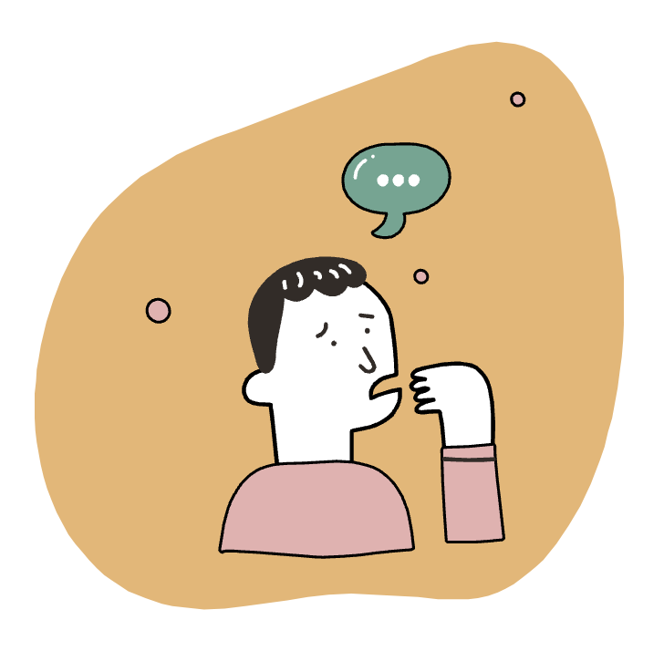

Concepts to Know
Mental health influences cognition, perception, and behavior. It affects how we think, feel, and act (emotional, psychological, and social decisions). Your mental health is a good indicator as to how you handle stress, empathize with others, and make healthy choices. Poor mental health and mental illness are often used interchangeable. However, this is a huge misconception as poor mental health does not mean mental illness. A person can experience poor mental health but not be diagnosed with a mental illness.
Exhibit Self Awareness
Emotional
How are you feeling? Are you engulfed with negative emotions?
Social
Do you see yourself isolating or limiting social interactions?
Psychological
What are you thinking? Are you having dark or unconventional thoughts?
What Can Cause Mental Illnesses?
Negative Thoughts
Stress
Environment
Unhealthy Habits
Genetics
Trauma
Signs to Look For
There are many behaviors in a person that can indicate a negative change in mental health for a person
Noticing Changes
Here are some questins to get you to start thinking about your mental health and about the people around you!
- Are their major behavioral changes?
- Are their social interactions decreasing?
- Have their eating habits changed?
- Are they dressing differently?
Look at how others are functioning in school with their relationships, friends, and family. Notice any behaviors that are changing.
If someone is...
- starting to isolate
- changing sleeping patterns
- dressing differently
- talking less
- eating less or more than usual
- acting out of character
Approaching Others
There are many ways you can help others improve their mental health
What to Do?
- Avoid the “how are you” questions because often the response is “I’m fine”
- Instead sit down with them in private and say, “I noticed that (any change you seen in behavior).” Ex: “I noticed that you always come to school and get your work down, but lately I noticed that you are really sad and are hanging with different people.”
- Show you care about them and ask if they need help
How to Approach Someone
- Be direct. Acknowledge how much they mean to you and inform them that anything you do is coming out of a place of love.
- Describe what you noticed and say, "it is important to me that you are okay and let me know how I can help." If it is someone you are not close with, help get resources (guidance counselor) available for them and say, "I can walk with you to the counselor's office."
- Let them know they are loved and cared about and that they don't need to go through this alone.

Improve Your Mental Health
Here are a few ways you can improve your mental health and be healthy!
-
Talk to Others
Being around people, having a conversation, just being present. Good and bad things happen in life and it is good to communicate your feelings and share those experiences with others. This can lighten the burden or prevent bad thoughts from being stuck in your head. You can talk with your friends and family, it does not have to be a professional. They can help increase your social support and share their perspective on your experiences. New perspectives can show there are more options for ourselves and explain what is in our control and what is not in our control.
-
Mindfulness
Apps, music, meditation, simply being still.
-
Mental Health Apps
There are many apps available with different types of services that can help improve your mental health. Here are a few great apps:
Calm (Exercises for breathing, sleep, and mindfulness. Has sleep stories by Harry Styles and many other celebrities! Includes limited free version)
TalkSpace (Access to medical staff 24/7. Best for people uncomfortable with or are unable to go to in person therapy sessions. Includes fees.) -
Be active
Exercise, get out, lay on the grass.
-
Create a Positivity Note Jar
You can fill your jar with notes filled with things that have improved your mental health. For example, you can write, "took a walk" or "medicated in the morning." Or, everyday you can write a note filled with anything that made you happy. This can be an accomplishment like "I got on A on a test" or even something as simple as "I ate ice cream!"
-
Make Fidget Toys
Create stress balls (balloons filled with a mixture of baking soda and conditioner), play with a nut and bolt, or use fidget spinners.